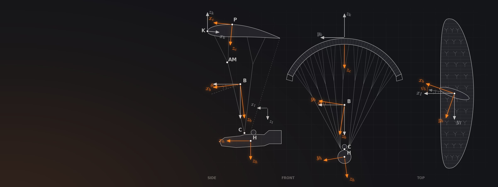
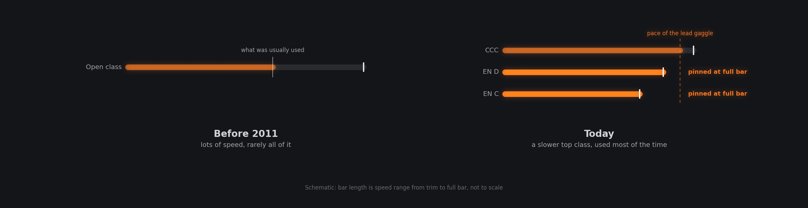

It makes the wing fly faster. Pushing the bar with your feet pulls the front risers down through a set of pulleys, tilting the wing nose-down to a lower angle of attack. You gain speed and progress into wind, at the cost of a higher sink rate and a wing that collapses more easily and more violently.
Also asked as: What is a speed bar on a paraglider? · How does a paraglider speed system work? · When should you use the speed bar?
Safety. This page explains how things work; it is not flying instruction. Learn and practise these situations with a qualified instructor, ideally on a safety (SIV) course over water, and follow the manual for your own wing, which takes precedence over anything here.
It shortens the front risers. The wing tilts nose-down around the rear risers and flies faster.
The speed bar is a foot stirrup on the harness, connected by lines to pulleys on the risers. Pushing it shortens the A risers most, the B risers less, and leaves the rear risers where they are [1][3]. The wing rotates nose-down around the rear risers, its angle of attack falls, and it flies faster [2][3]. At full bar the A risers of Niviuk's Hook 6 end up 145 mm shorter than the C risers on most sizes [3]; on Nova's older Mentor 2 the difference was about 18 cm [4].
Many harnesses have a two-step bar. On Ozone's Rush 6 the lower step gives about half the accelerated range, and full speed comes when the pulleys on the risers touch [5]. Competition wings have a hard limit: CIVL's Competition Class lets the speed system shorten the front risers by no more than 140 mm relative to the rearmost riser [6].

After Bill Belcourt, chapter 8. Schematic, not to scale.
On most wings, roughly 10 to 15 km/h over trim. Full bar is rarely the most efficient choice.
As a worked example from the Hook 6's certification figures, 14 km/h of speed range on the brakes and 25 in all, the bar adds about 11 km/h above trim [3]. Makers' figures for EN A to EN C wings show full bar roughly 10 to 15 km/h above trim (see How fast does a paraglider fly?). Sky puts the gain at up to 30 percent over trim [7]. The sink rate rises with speed, as every speed polar shows [8].
Used lightly, the bar costs little: up to half bar barely changes the glide on Ozone's Rush 6 [5]. Full bar flies fastest but glides noticeably worse [3], and Sky's manual says plainly that full bar is rarely the best choice [7]. The bar earns its keep into a headwind and through sinking air between thermals, where flying faster covers more ground for the height lost [5][8].
It makes the wing easier to collapse, and a collapse at speed is harder and faster. The manuals agree on four rules.
A lower angle of attack leaves the wing closer to a collapse and more sensitive to turbulence [5][3]. When a collapse does happen on bar, it comes faster and more dynamically than at trim [2][1], and you may need more height to recover [4]. The manuals set out four rules:
On performance wings the B or C risers control pitch without spoiling the profile the way the brakes do.
On many performance wings you can fly actively on the risers rather than the brakes while gliding, which gives better feel [9]. Ozone's LM7 manual explains why: pulling the rear risers raises the angle of attack more evenly across the chord and weakens the profile far less than braking [9].
The inputs must be small, or you can stall part or all of the wing, and if the nose starts to fold while you are on bar, release the bar first and only then make small C-riser inputs [9]. Riser control is for gliding in normal air; in strong turbulence the manual sends you back to trim speed and active flying on the brakes [9].
Paraphrased from Paragliding Atlas episodes, never quoted, because the transcripts are automatic captions. Each card links to the chapter where it is said.
Luc Armant helped write the rule that limits how far the speed system of a competition wing can shorten the risers, to 14 cm. A very pitch-stable profile gets less speed out of that range, so the rule rewards wings built close to the edge of stability, a side effect he says the sport still has to solve.
Luc Armant Pitch stability without a tailOn some high-level wings, touching the brakes at full speed makes the wing faster, not slower, Tom Lolies says: a barely visible deflection of the trailing edge reduces the profile's pitch-up tendency, so the profile pitches down and speeds up.
Tom Lolies Does brake input prevent collapsesOn bar, a two-liner's profile takes an S shape that pushes back when something tries to tuck the nose, Helmut Schrempf explains. Use the brakes instead of the B risers and you add lift at the trailing edge, and the front can collapse.
Helmut Schrempf Was that force impossible to preventThe explanation is rewritten in plain language from the sources listed here, which you can check for yourself. Government handbooks are used where they exist; manufacturer manuals, federations and test houses for what is specific to paragliders. Numbers worked out on this page rather than quoted are labelled as worked examples.
The guest cards add what was said on the show, paraphrased and linked to the chapter.
Draft: not yet reviewed. Spotted a mistake? Tell me and I will fix it.